The Debug Menu is a window drawn over the game by OpenCAGE's runtime utils, the plugin OpenCAGE puts in the game folder. It shows what the game is doing as it runs, from what each character senses and is about to do to the zones, nav mesh and collision your level was built with, and it has tools that act on the game: cheats, debug checkpoints, pausing and stepping, a free camera for filming, and a switch that keeps the game away from your saves.
Its tabs are in groups:
Nearly everything in it has a name, so OpenCAGE and AI assistants can read it and switch it over Live Link (see Live Link & AI Assistants).
![The Debug Menu over the game on the Torrens bridge. Along the top of its window, the amber row of groups (Overview, Characters, AI, World, Scripts, Sound, Rendering, Performance, Game, Cinematic) with Characters in front, and under it the Characters group's tabs (Characters, State, Control, Animation, Player, Inventory, Input, Alien) with State in front: one of the crew is picked in the Character dropdown, with its orders, what its body is doing, and its state flags. Beside the window are the Info lines (the level, the zone and the frame rate), and over two of the crew are their labels: name and class, branch, then awareness, alertness and aggression.](img/w2-intro.jpg)
The Debug Menu on the Torrens, on Characters > State, with the crew's labels and the Info lines drawn over the game.
Press Launch Game on the main toolbar, tick Debug Menu at the top of the Debug tools group, and pick the key that opens it from the dropdown beside the box: F7 by default, with the same choices as Launch Game's other keys. Then press Start Alien: Isolation.
The runtime utils support the Steam, GOG and Epic Games Store versions of the game, so on other platforms the box is greyed out. The Debug Menu runs alongside the rest of the Debug tools: tick Live Link as well if you want OpenCAGE's script debugger or an AI assistant to work the menu (see Live Link & AI Assistants). Starting the game from Launch Game, or by saving with Options → Misc → Open Game On Save ticked, sets it up as it's ticked there, and it then stays in the game folder, so a game started from Steam has it too until OpenCAGE next starts the game without it.
The Debug Menu can't share its key with Hot reload, Unlock mouse or Possess characters while they're ticked: Launch Game says so and puts the dropdown back. It also warns you if you pick a key the Debug Menu's free camera uses (F8 turns it on and off, F9 takes a screenshot, and F1 to F3, Home, Delete, End, Page Up and Page Down act while it flies), because the free camera then goes without that key.
Cinematic Tools are now part of the Debug Menu. Launch Game no longer has an Enable Cinematic Tools box (hover over Debug Menu there and its tooltip says where they went): the free camera, camera tracks and visuals are in the Debug Menu's Cinematic group, and the separate Cinematic Tools program no longer comes with OpenCAGE. See Coming from Cinematic Tools for where everything went.
So are three more of Launch Game's old options. The Debug Menu also does what Enable UI Memory Overlay, Enable Debug Checkpoints and Enable Level Selection did, so they've gone from Launch Game: the UI memory overlay is a checkbox in Performance > Memory, the debug checkpoints are in Game > Tools, and any level can be loaded from Game > Game flow. See Removed Options.
Under the Debug Menu box, Don't write saves keeps the game from writing to your saved games while it runs, so testing a level never changes them. It's a Debug Menu feature, so it's greyed out until Debug Menu is ticked. Ticked, the game starts with the Debug Menu's own Don't write saves switch already on, before the game first saves, so even the save a campaign level makes as it loads is kept back.
Like the Debug Menu itself, it stays in the game folder, so a game you start outside OpenCAGE afterwards writes no saves either, until OpenCAGE next starts the game without it. In the game, Game > Saves says what it keeps back, and turns it off or on as you play. Launch Game has more on it.
In the game, press the key to open the Debug Menu, and press it again or Escape to close it.
Along the top of the window is a row of groups in amber: Overview, Characters, AI, World, Scripts, Sound, Rendering, Performance, Game and Cinematic. Under the group in front is its own row of tabs. Overview and Sound have one tab each, so they show it straight away.
Many tabs have switches that draw over the game: labels and view cones over characters, skeletons, the nav mesh, collision boxes, trigger boxes and more. They're drawn whether the window is open or not, so close it to play with them on screen.
The Overview group has one tab, Info, so choosing the group shows it.
The Info tab puts lines of information in the top-left corner of the screen, whether the window is open or not (while it's open, they move beside it). Tick the ones you want, or All or None:
The frame-time graph from Performance > Frame goes under these lines.
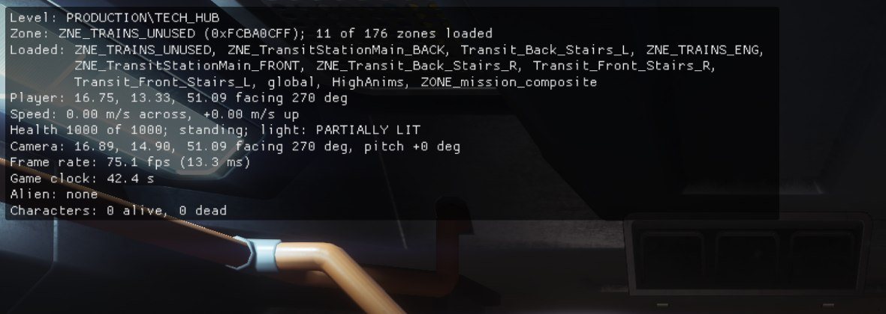
The Overview group's switches, for Live Link & AI Assistants:
| Tab | Switches and values | Commands |
|---|---|---|
| Info | info.level, info.zone, info.zones_loaded, info.position, info.speed, info.state, info.camera, info.frame, info.clock, info.alien, info.characters, info.draws, info.gpu, info.memory, one for each line in the order above |
The Characters group is about the characters the game is running, the player included: what they know and are doing, and tools that change them. Its tabs:
The Characters table lists every character the game is running, the player first, with:
Click a character to select it. Its details appear under Selected, in sections you can fold:
With more than eight characters in the level, only those within 60 m of the camera are read in full: the table shows what it can for the rest, and a far character's details are read once you select it.
![The Debug Menu over the game on the Torrens bridge, on the Characters group's Characters tab, under the amber row of groups: the Draw over the game switches with Labels over heads for every character ticked, the table of characters (the player, then an android and three humans, each named Andy, with their class, distance, health, awareness, alertness and aggression, mood and branch), and below it the selected human's details: its unique id, entity and composite instance, its behaviour tree NPC_Human_behave, position and distance, then its health, awareness of the player, alertness, aggression, mood and branch, and whether its enemies sense it.](img/characters.jpg)
The Characters tab on the Torrens, with one of the crew selected.
The switches under Draw over the game, at the top of the Characters tab, draw for the selected character only, or for every character with For every character ticked beside them:
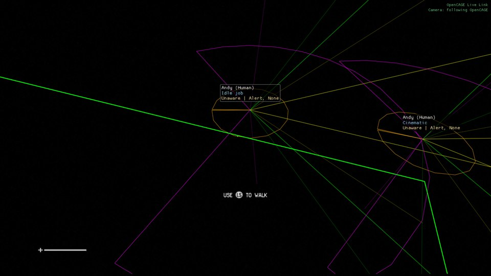
Labels, view cones, hearing ranges and paths for every character, seen from above the Torrens bridge with the game's camera following OpenCAGE's Viewport over Live Link. From up here the level isn't drawn, only what the Debug Menu draws.
The State tab shows the selected character's orders and what its body is doing. It only reads the game, so it changes nothing:
The Control tab changes the selected character through the game's own calls. The changes are made as the game next updates its characters, so nothing happens while the game is paused. The Last line at the bottom says what was done.
The Animation tab shows what the selected character's animation system is doing, with the names of its trees, nodes, clips and bones, which the game itself keeps only as numbers: the Debug Menu reads the names from the game's DATA\GLOBAL\ANIMATION.PAK the first time it needs them, so they follow a modded package too.
![The Animation tab with the alien selected: the Draw over the game switches (Skeletons, For every character, Bone names, Bone axes, Helper bones, Velocity, IK targets, Tree and clip over heads, Pose drawn: the final pose), the Character section folded, the Layers table (full body with 67 clips, general additive, breathing, look at, gun / tail, hand, face and final, with their level of detail, weights, trees and clips), and the Trees section, with Only nodes with weight ticked, listing ActNPCLocomotionCycle on the full body, PERSISTENT_ACT_DUCK, PERSISTENT_ACT_BREATHE, PERSISTENT_ACT_LOOK_AT, SECONDARY_ACTION_HAND_POSING and SECONDARY_ACTION_FACE_POSING.](img/animation.jpg)
The switches at the top of the Animation tab draw over the game, for the selected character or, with For every character, every one:
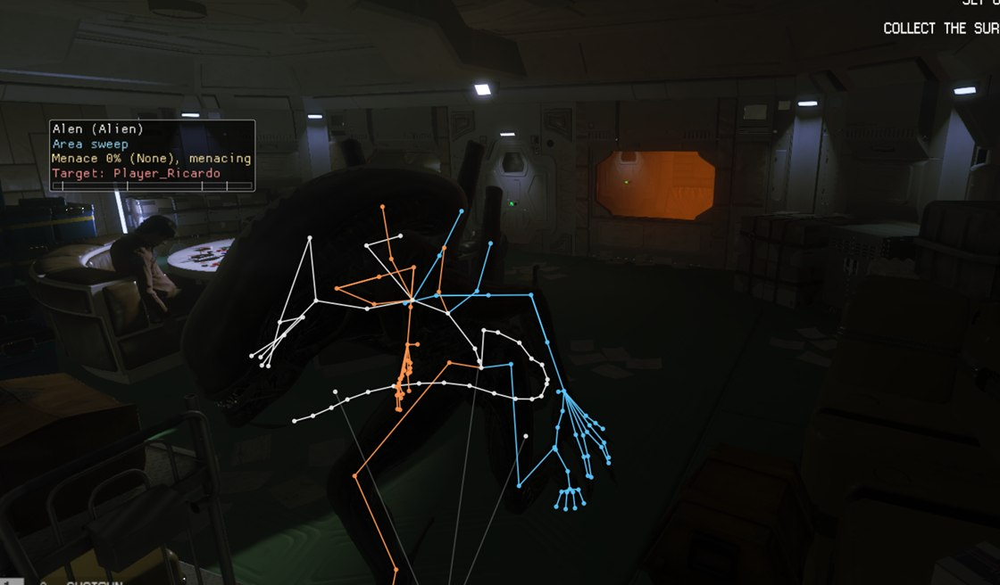
The alien's skeleton over its mesh, seen through the game's camera placed by OpenCAGE's Viewport over Live Link.
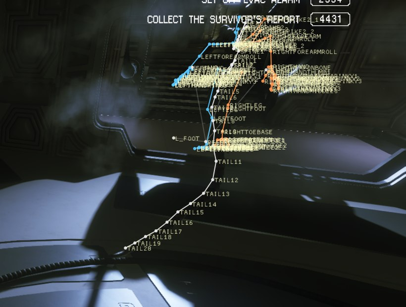
Further down the Animation tab are the animation Switches. Each changes one of the game's own steps in posing a character, for every character, or only the selected one with Only the selected character ticked:
Under them, Reference locator has Draw the reference locator: while a matched animation (a kill, a door, a ladder...) lines a character up with a point, the point is drawn as axes with a line from the character. Layer weights by bone group shows how much each layer's pose counts on each group of bones, as the game combines the layers.
Folded at the bottom of the Animation tab, Environment animations lists the level's animated objects, what PlayEnvironmentAnimation entities play, nearest the camera first: each one's rig, clip, time, state, distance and script entity (hover over the entity for its composite instance). Draw their skeletons and With labels draw their skeletons over the game, Within a distance of up to 300 m. Click one in the list to pick it out: it's drawn highlighted, however far away it is.
The Player tab is in parts, from the top: the cheats, health and teleport; the player as the AI sees them, below; then hiding, what's under foot and the objectives.
![The Player tab: at the top the Cheats (God mode, Invisible to the AI, Infinite sprint, Infinite items, Untargetable, The alien can't grab the player, Infinite ammo, Never run out of torch batteries), the health bar at 1000 of 1000 with Full heal, Set health to and Kill the player, and the sprint left; Teleport, with where the player is and To the camera, To the crosshair and Back; then Light: PARTIALLY LIT, a meter at 0.388, brightness 0.050 through the AI's light curve 0.388 with the thresholds, the three light samples at +1.70, +0.00 and +1.00 metres with their colours, and Show the sample points; the Light meter tint with its opacity at 0.40; and Stealth: exposure 1.00, stance 1.00, cover 1.00, movement 0.00, Hiding: no, nobody targets the player, and the alien at 0%.](img/player.jpg)
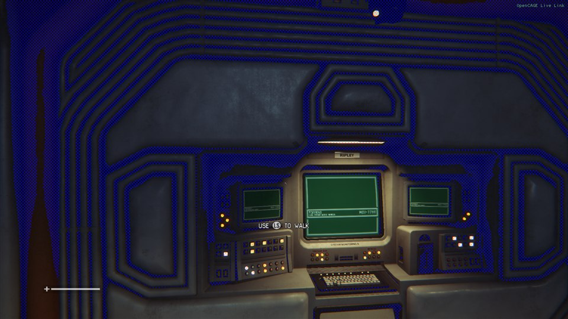
The light meter tint: the dark parts of the room, where the player would be hard to see, turn blue.
The top of the Player tab has the player cheats:
Teleport moves the player to a position you type (Copy puts where they are now in the box and on the clipboard), To the camera (fly the free camera there first; the player's feet go where the camera was, so expect a short drop), To the crosshair (the point under World > Inspect's crosshair), or Back to where the last teleport took them from. It's done the way the game puts back a character that fell out of the world, at the end of the next physics frame. Somewhere with no floor loaded, the player falls, and the game puts them back where they last stood.
The bottom of the Player tab:
The Inventory tab shows and changes what the player carries. Everything here changes what the next save holds, so while Don't write saves is off an amber line at the top says so: turn it on first to keep a campaign save clean.
![The Inventory tab: Current weapon, with nothing in the player's hands and the torch off at 0% battery, and the two Fill ammo buttons; the Inventory table, slot by slot, with medikits, flares, IEDs and crafting parts at their carry limits, then the pistol (selected), the stun baton and the shotgun, each with a Fill button, and Top up everything; and the Give section with its filter, the game's item list (the revolver listed as pistol - Revolver), the Give, Fill up, Give all and Give every weapon buttons and the last item given.](img/w2-inventory.jpg)
The Input tab shows what the game thinks is pressed: every action of the player's input, or from the dropdown the menus' or the debug input, with its state (pressed, held, released, toggled or disabled), each analogue value that isn't at rest, and whether the input is enabled, movement let through, and the input locked by the interface. Every action lists those at rest too.
While the Debug Menu is open it has the keyboard and mouse, so the game sees nothing from them: tick Show what is pressed over the game and close the window to watch it as you play, or use a gamepad.
The Alien tab shows the alien's own state, once it has spawned:
![The Alien tab: Setup MODERATE, branch Backstage area sweep; a menace gauge at 0% (None) with thresholds 0.12, 0.25, 1.00, 1.00, 1.00, Not menacing (paused), menace timer 30.0 s of 30.0 left, menaced the player 2 times of 4, not withdrawing; Ambushes and killtraps: decision Waiting; the sweep area In and out between the player and the point, with its point and its 59.7 m by 32.0 m box, Draw the sweep area ticked; and Vents: backstage (in the vents), 12 vents known, with Draw where it heads in the vents, and the best vents unticked.](img/alien.jpg)
The alien after being drawn to the player a few times (as Alert the alien to the player does): it has menaced the player twice and is back in the vents, sweeping the area.
Under the alien's state, the Alien tab has three more parts:
What the alien has learnt belongs to the game rather than to one alien, so it can be changed with no alien in the level, and every alien uses it. The game keeps it in memory only, never in a save: the level scripts set a stage at points in the campaign (NPC_SetAlienDevelopmentStage), and the alien's first spawn in one of the first three missions starts it over, so a change lasts until then, or until the game closes. A trick you take away comes back the next time its counter counts, if the counter is past its number.
The Characters group's switches, values and commands, for Live Link & AI Assistants. The State and Control commands act on the selected character, or on the one given as id= its unique id; help gives each command's arguments.
| Tab | Switches and values | Commands |
|---|---|---|
| Characters | characters.labels, characters.view_cones, characters.hearing, characters.paths, characters.last_known, each with .all for every character | |
| State | ai.state, ai.flags | |
| Control | ai.motivations, ai.motivation, ai.force_idle, ai.mood, ai.force_mood, ai.set_health, ai.damage, ai.damage_to_one, ai.burn, ai.kill, ai.despawn, ai.respawn, ai.list_despawned | |
| Animation | anim.skeletons, anim.all, anim.bone_names, anim.bone_axes, anim.helper_bones, anim.velocity, anim.ik_targets, anim.labels, anim.only_contributing; anim.no_ik, anim.no_linear_warping, anim.no_angular_warping, anim.no_lod, anim.reference_pose, anim.no_ragdoll_pose, anim.layer_off.additive (and .breathing, .look_at, .hand, .face), anim.switches_selected_only, anim.reference_locator; anim.env_skeletons, anim.env_labels, value anim.env_distance | anim.report, anim.group_weights, anim.list_env_models, anim.select_env_model, anim.hooks |
| Player | player.god_mode, player.untargetable, tools.invisible, player.no_grabs, player.infinite_sprint, tools.infinite_ammo, player.light_samples, player.light_tint, player.hiding_overlay, player.underfoot_overlay, player.objective_route | player.status, player.heal, player.set_health, player.kill, player.teleport, player.teleport_to_camera, player.teleport_to_crosshair, player.teleport_back, player.hiding, player.underfoot, player.list_objectives, player.objective_popup |
| Inventory | player.infinite_items, player.torch_batteries | player.weapon, player.list_inventory, player.list_items, player.give, player.give_all, player.give_weapons, player.give_ammo, player.top_up_items, player.list_blueprints, player.give_blueprints, player.list_keycards, player.give_keycards, player.list_gating_tools, player.give_gating_tools, player.set_gating_tool |
| Input | player.input_overlay | player.list_input |
| Alien | alien.sweep_area, alien.backstage_target | ai.alien.learning, ai.alien.ability, ai.alien.stage, ai.alien.list_setups, ai.alien.setup, ai.alien.director, ai.alien.draw_to |
player.give takes an item and a count or max, such as medikit,max: the item by the game's own name for it, the name the game shows, a name players use (medkit, revolver, stun baton...), or enough of one to tell which. player.teleport takes x,y,z.
The AI group shows how the characters decide what to do. Its tabs:
The Behaviour Tree tab shows where the selected character is in its behaviour tree, the same trees you can open in the Behaviour Tree Editor:
Tick Show over characters to draw each character's leading node, outer branch and latest debug text over it in the game (the nearest twelve at once).
The node names are noted as the level loads its trees. If a level's trees ever loaded before the Debug Menu could follow them, the tab says so: its nodes show only their class, and the Tree Switches tab has no switches for that level.
![The Behaviour Tree tab with the alien selected: Show over characters ticked, tree ALIEN_BEHAVE, outer branch AREA_SWEEP_BRANCH (before it: BREAKOUT_BRANCH), and the active path SelectorLinear, ConditionHasMotivation true, DecoratorBranch AREA_SWEEP_BRANCH, ConditionHaveTarget true, ConditionIsEnemyOfTarget true, ConditionTargetIsPlayer true, ConditionIsPerformingRoleOrCouldPerformRole true, ActionPerformRole running; then its recent events, 17.6 seconds ago: branch off BREAKOUT_BRANCH, branch on AREA_SWEEP_BRANCH, the switch Force_Breakout reset, and ActionBreakout succeeded.](img/behaviour-tree.jpg)
The alien in a Survivor map, sweeping the area round the player after breaking out of the vents (the one-shot Force_Breakout tree switch sent it, and unticked itself).
The Squads tab shows how the game organises NPCs that fight together:
Squads and objectives draws an arrow from each NPC to its objective, labelled, and each squad's centre with lines to its members; Safe points draws the level's safe points as green rings. With no NPCs fighting together, there are no squads and the tab says so.
The behaviour trees have debug switches of their own: the DebugMenuLinkTest and DebugMenuLinkItem nodes in the Behaviour Tree Editor. The Tree Switches tab lists those in the level's trees, with each one's default and the trees it's in. Tick a switch to make its test go the other way from its default; an action with the same label sets it back to its default when a tree reaches it, so a one-shot switch, such as Force_Breakout, unticks itself.
The switches act for every character, or only for the selected one with Only for the selected character chosen (the Character dropdown is greyed out until it is). Untick all puts them all back, and they all go back to unticked when a level loads. The shipped trees have 18, among them Disable All Aliens, which sends the alien into an idle action until you untick it, Force_Backstage_Stalk, Allow Hit And Run, Force Android Idle, Human Direct Control and Force Idle.
Two of them need a word. Allow Hit And Run is on by default, so ticking it turns hit and run off. Alien Gamepad control, Android Direct Control and Human Direct Control lead to branches that also need the game's own free camera (not the Debug Menu's), which the game never turns on, so on their own they do nothing: Possess Characters does that job.

The behaviour trees' DebugString action logs its text whenever a character's tree runs it, and the Assert action its message. The Tree Log tab lists them for every character, newest first, with how long ago, the character, the text, the node it came from and how many times it repeated (a line counts its repeats until a second goes by without one). Clear empties it.
The shipped trees use no DebugString, and their five asserts only fire in rare cases, so the log is for trees you've edited: add a DebugString to a branch in the Behaviour Tree Editor to see when characters reach it.
The characters' state machines (moving, cover, dying, the weapon and shooting) still hand a line to a logger from 29 places in the game, which then throws it away. With Log state changes ticked, the State Log tab keeps each one: the time, the character, the machine, and the change from one state to another, with what it wants or the state it's in alongside. Only the selected character narrows it to one, the filter finds a character, machine or state, and Clear empties it. Nothing is logged until it's ticked.
Breadcrumbs are a trail of what each character did where. Draw breadcrumbs draws, for the selected character or with For every character every one, a trail of where it went, and a labelled crumb wherever its behaviour tree branch, awareness, mood, body state, action, script command or health changed, where it went into or out of the vents, and where it died (and each state change, with the log on). They fade over a minute, or as long as Kept for says, from 10 seconds to 10 minutes.
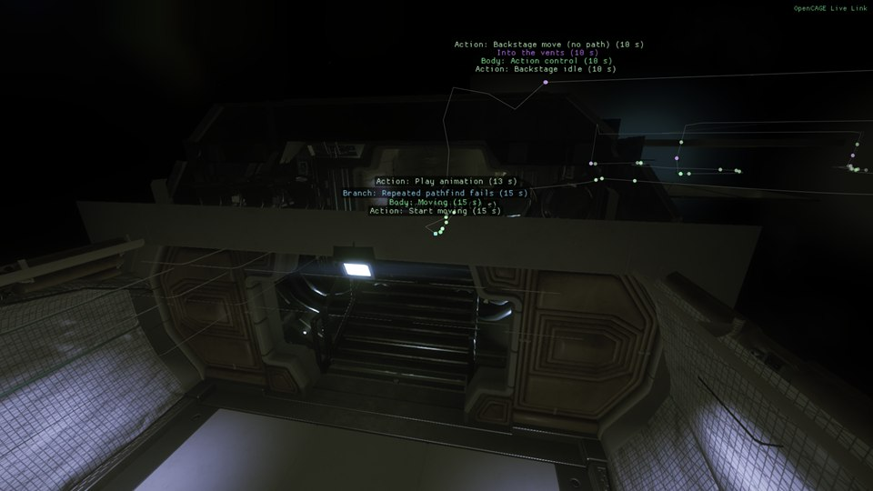
The alien's breadcrumbs over the last minute: where it went, and what changed where.
The Tuning tab has five numbers the game reads every time it uses them. Each is given here with the game's own value:
Reset beside each puts it back to the game's value. Changes last until the game closes.
The AI group's switches, values and commands, for Live Link & AI Assistants:
| Tab | Switches and values | Commands |
|---|---|---|
| Behaviour Tree | bt.overlay | |
| Squads | ai.squads.draw, ai.squads.safe_points | ai.list_group, ai.list_squads |
| Tree Switches | tree_switch. followed by the switch's label exactly, such as tree_switch.Disable All Aliens; bt.switches_selected_only | |
| State Log | ai.state_log, ai.state_log.selected_only, ai.crumbs, ai.crumbs.all, value ai.crumbs.seconds | ai.list_state_log, ai.state_log.clear, ai.list_crumbs, ai.crumbs.clear |
| Tuning | values ai.tuning.android_melee_range, ai.tuning.android_melee_context_timeout, ai.tuning.android_grapple_delay, ai.tuning.player_throw_speed, ai.tuning.friendly_fire_modifier | ai.tuning.reset |
The World group shows the level around the camera and the player. Much of it is what Save and Build bakes, as the game loaded it, so it's the place to check a rebuilt level. Its tabs:
The Inspect tab tells you what the camera is looking at. Tick Crosshair inspector and a crosshair appears in the middle of the screen: a ray is cast from the camera along the way it looks, through the game's own queue of rays (the one its zone streaming, footsteps and AI sight use), so the answer is what the game itself finds on that collision layer. The game works the ray out during its next frame, so the answer is a frame old, and no ray is cast while the game is paused (the last answer is kept while the camera still looks the same way).
Other tools use the crosshair too: the Player tab's To the crosshair, Draw the alien to a point, the Navigation tab, and OpenCAGE's Select Entity Under Game Crosshair in the composite display's Script Debugger menu, which selects the entity under the crosshair in OpenCAGE.
![The crosshair inspector on a plastic crate in a room: a red crosshair in the middle of the screen with a green label beside it giving the distance and what was hit, the crate's model box in yellow and its collision box in blue, and to the right the Inspect tab with Under the crosshair listing the collision map row, its flags, the entity and composite instance with the composite's name and path, the zone, the render and physical materials, the static collision, and the model's elements with their materials and textures.](img/w2-inspect.jpg)
The Zones tab shows the level's zones as the game's zone streaming keeps them:
Why each view is in its zone: a view whose camera follows a character (the player's camera) is handed the zone under the player's feet; any other casts a ray 500 m straight down from the camera, and the collision map row it hits gives the zone. The tab names the row each view's ray hit, with its entity, composite instance, layer, flags and zone, and the rows under the player's four foot rays. A wrong zone on a rebuilt collision row, or a piece of collision under the camera that shouldn't be there, shows up here as the reason the zones around the camera never stream in. Draw the zone rays over the game draws them (Every view for all the views, not only the first).
The Overlays tab draws script entities over the game, each kind with a switch: the player's trigger boxes (PlayerTriggerBox) and use trigger boxes (PlayerUseTriggerBox), doors with the zone link they open, splines with their points and direction, and the interaction points the game keeps for pickups, weapons, ammo, doors, computers and save points, with their quantity.
Measuring rings, at the bottom of the tab, draw up to four rings on the ground (2, 5, 10 and 20 m; Default radii puts those back) Around the player, the selected character, the point under the crosshair, or a point you drop with Drop a point here, with the distance along the ground to each character inside: handy for checking the ranges the AI works to.
![The start room of HAB_AIRPORT with the World overlays on and the window closed: trigger boxes drawn round the room and the suit cupboards, green while enabled and grey while not, each labelled with its composite, state and collision row, and the one the player walked through with when they entered and left it; the doors marked with yellow crosses labelled unnamed (door), locked; and the interaction points nearby marked with white crosses, labelled with their names, such as AI_UI_INTERACT_SUIT_CUPBOARD and AI_UI_RESTORE_POWER (locked).](img/w2-world-overlays.jpg)
The Cover & Jobs tab shows the level's cover and the AI's jobs as the game holds them, what OpenCAGE's cover bake wrote. Its sections fold:
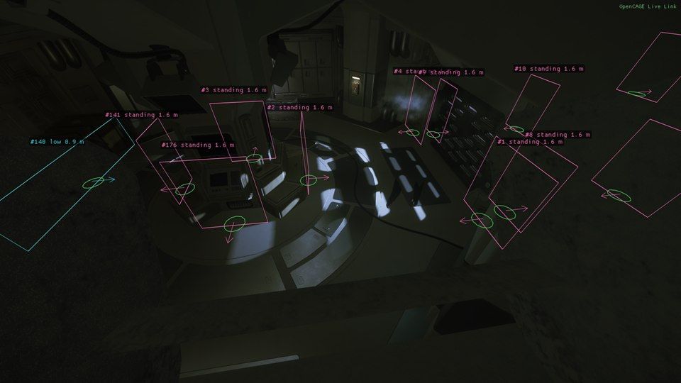
The Physics tab shows what the physics engine holds for the level:
COLLISION.HKX and COLLISION.MAP): Count reads every static collision instance and collision map row once, and says how many there are by compound and collision layer, how many are disabled, have collision turned off, or have no row or a row that points elsewhere. Static collision boxes near the camera draws them as boxes, coloured by layer, zone, compound or state (red: collision off, magenta: disabled, yellow: no row). Show the models flagged as collision turns on the game's own switch for drawing collision models in place of the normal ones; the game only reads it as a model is shown, so reload a checkpoint to see it everywhere.PHYSICS.MAP): every dynamic physics system the level made, with its composite, bodies, position, entity and composite instance. Show them draws axes at each one's transform with lines to where its bodies are now, so a twisted transform shows at once.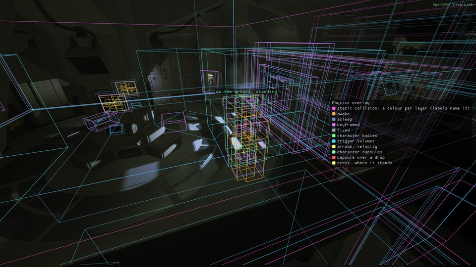
The World group's switches, values and commands, for Live Link & AI Assistants:
| Tab | Switches and values | Commands |
|---|---|---|
| Inspect | inspect.crosshair, inspect.label, inspect.box, inspect.collision_box, inspect.glow, inspect.freeze, inspect.row_draw; values inspect.layer (0 to 31), inspect.distance | inspect.pick, inspect.details, inspect.row, inspect.list_layers |
| Zones | world.overlay.zone_ray, world.overlay.zone_ray_all_views | zones.status, zones.list_zones, zones.list_links, zones.list_viewpoints, zones.zone, zones.ray, zones.hull_row |
| Overlays | world.overlay.triggers, world.overlay.use_triggers, world.overlay.doors, world.overlay.splines, world.overlay.pickups, world.overlay.labels, world.overlay.only_enabled, world.overlay.rings, world.rings.distances; values world.overlay.distance, world.overlay.label_distance, world.rings.radius_1 to world.rings.radius_4, world.rings.centre (0 the player, 1 the selected character, 2 the crosshair, 3 the dropped point) | world.list_triggers, world.list_use_triggers, world.list_doors, world.list_splines, world.list_pickups, world.scan_status, world.rescan, world.rings.drop, world.rings.reset, world.rings.report |
| Navigation | nav.polys, nav.barrier_polys, nav.offmesh, nav.traversals, nav.under, nav.labels, nav.around_player, nav.path_log, nav.failed_only, nav.flood_auto, nav.path_test_draw; values nav.colour_mode (0 to 7, in the order of the Colour by list), nav.radius, nav.height_band, nav.max_polys, nav.fill | nav.status, nav.poly_at, nav.poly, nav.decode, nav.highlight, nav.list_actors, nav.list_barriers, nav.door_audit, nav.list_barrier_log, nav.list_loads, nav.list_paths, nav.clear_logs, nav.list_offmesh, nav.list_traversals, nav.player_traversal, nav.flood, nav.flood_from_path, nav.list_islands, nav.path_test, nav.path_test_result, nav.path_test_clear |
| Cover & Jobs | nav.cover, nav.cover_slots, nav.cover_links, nav.cover_labels, nav.jobs_spotting, nav.jobs_crawl, nav.jobs_assault, nav.jobs_active_only, nav.jobs_tasks; value nav.cover_radius | nav.cover_status, nav.list_cover, nav.cover_segment, nav.list_cover_tracked, nav.jobs_status, nav.list_job_positions, nav.list_jobs, nav.list_character_jobs |
| Physics | physics.static_boxes, physics.static_labels, physics.show_collision_meshes, physics.bodies, physics.body_labels, physics.triggers, physics.phantoms, physics.capsules, physics.systems, physics.legend, physics.raycast_log, physics.raycast_overlay, physics.raycast_hold, physics.collision_log_overlay; values physics.static_radius, physics.static_colour (0 layer, 1 zone, 2 compound, 3 state), physics.bodies_radius, physics.raycast_layer (-1 every layer), physics.raycast_distance | physics.census, physics.list_static, physics.list_bodies, physics.list_capsules, physics.list_systems, physics.layers, physics.list_raycasts, physics.list_collision_changes, physics.clear_collision_changes |
The Scripts group shows what the level's scripts are doing. Its tabs:
The shipped game keeps no names for script entities, so every tab shows an entity by its type, its id and the id of the composite instance it's in, with the name of its composite. The ids are the ShortGuids OpenCAGE shows with Show ShortGuids on; hover over an entity for them. Methods are named as OpenCAGE names them where the name is known, and by their id otherwise. Most lists have a filter box and a Copy button, and each has a command that gives it as text (see Names).
OpenCAGE's script debugger stops the level's scripts, and the game with them, just before a method is called on an entity you've set a breakpoint on. Breakpoints are set in OpenCAGE: right-click a node in a composite's flowgraph and choose Set Breakpoint, or press F9 over it, with the game started with both Debug Menu and Live Link ticked. The Debugger tab shows the same thing from the game's side:
OpenCAGE brings the held node to the front of its flowgraph while it's connected, and its Continue and Step (F8 and F10) do the same as the buttons here. While the scripts are held, your edits over Live Link wait until they go on. A level that unloads, or loads again, while the scripts are held lets them go. Where this release of the game doesn't match what the debugger needs, the tab says Script breakpoints are not available on this game release.
![The Debug Menu on Scripts > Debugger with the scripts held at a breakpoint: the orange line Held at a breakpoint, the Continue, Step, Step frame and Pause scripts buttons, then The held call with the method and the entity it is called on, the composite and instance it is in, its path, the breakpoint's number and when it was due on the scripts' clock, and the calls that led to it; below, the Breakpoints table with one breakpoint ticked, placed in one running instance and hit once. Along the top of the game, the orange line Scripts held at breakpoint 2, naming the method and entity.](img/w2-scripts-debugger.jpg)
The scripts held at a breakpoint set in OpenCAGE, with the line along the top of the screen that says so.
The game still checks that the level's script entities are set up properly, and words what it finds: a pickup spawner that names no item, a door with no animation, a speech entity with nothing to speak through, an animation set missing the animation asked for, a zone link the wrong way round, a Global Event value out of range, and so on. The game makes those checks but never tells anyone. The Errors tab lists every failed check (Check, in amber) and error (Error, in red), one line per message and entity, with how many times it has happened and how long ago it last did:
The grey line at the top says how many of the game's 173 checks and errors are being watched; on a release of the game where some aren't where they should be, it says how many were left alone. Both lists start afresh when another level loads.
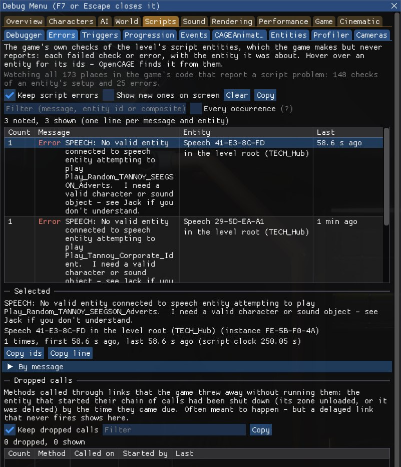
When an entity fires an output, each method its links call is queued, and runs when it comes due. Waiting calls lists those that haven't run yet, soonest first: how long until each is due, the method, the entity it's called on and the call that queued it, with the start of its chain (hover over the time for the link's delay). A link with a delay waits here; entities that time things themselves, such as delays and timers, don't show. Keep reading (on) reads the queue four times a second, and Read now once.
Trigger counts: tick Count to count every call the scripts run, by method and entity, busiest first, with how many ran in the last second and in all. An entity calling itself in a loop, or a timer firing far more often than you meant, shows at the top.
What the level's scripts carry beyond the level. Nothing here can be changed; it's read again every second while the tab is open.
Entities that aren't linked can still talk through messages the scripts broadcast: Global Event entities' events and their values, Update Global Position entities' positions, and characters being damaged, killed or stunned. Entities such as Global Event Monitor listen for them. The Events tab shows:
A message's name shows once an entity that uses that name has run; until then it's shown by its id. Keep messages (on) notes them, and Show character messages unticked hides the damage, kill and stun messages.
The level's CAGEAnimation entities: those playing first, then those started but held, each with its state (marked (cutscene) when it plays a cutscene), its time against its length, its entity and its composite. Show every one (stopped too) lists the rest. It's read four times a second while the tab is open. Nothing is changed from here: Animation Mode in OpenCAGE holds and scrubs a CAGEAnimation in the game.
The Entities tab brings back four debugging script entities that the shipped game still creates but leaves doing nothing. Each has a switch here, off unless you tick it or set its key in the settings file, so a level that still holds one plays as it shipped:
duration, samples_per_second, scale and auto_scale. The tab lists the graphs running. Key DebugGraph=1.debug_variable names (any of the names the Debug Menu gives its switches, such as characters.view_cones) to its value, or flips it when it has none. A name no switch has is noted in Errors. Key DebugMenuToggle=1.marked_name over its marked_object. The tab lists the level's markers. Key DebugObjectMarker=1.capture_filename, in a DebugCaptureScreenShot folder next to AI.exe. Its field of view, clip planes and wait for streaming are ignored. Key DebugCaptureScreenShot=1. It's not available on the GOG release, whose version of the entity differs.The other debugging entities are elsewhere: DebugText, DebugTextStacking and the two markers are switched on by Launch Game's Debug entities box (see Debug Text & Markers), and the debug checkpoints are in Game > Tools.
Tick Profile to time the level's scripts: each entity's own updates (for the entities updated every frame) and the methods run on it, in milliseconds per second of play, busiest first, by Entities, Types or Composites. The table gives the total, the updates and the methods, and how many of each ran a second. Time spent inside a composite instance's update is counted to the entities in it, not to the instance as well.
It costs a little while it's on. The counts start again when you tick it, press Start again, or another level loads.
The game's cameras as it keeps them:
Draw the cameras over the game and Draw the paths over the game (With labels) show them in the level.
The Scripts group's switches, values and commands, for Live Link & AI Assistants:
| Tab | Switches and values | Commands |
|---|---|---|
| Debugger | debugger.breakpoints (Stop at breakpoints) | debugger.state, debugger.continue, debugger.step (cycle, the default, or frame), debugger.pause, debugger.list_breakpoints, debugger.enable_breakpoint, debugger.remove_breakpoint, debugger.clear, and the others OpenCAGE's script debugger uses |
| Errors | scripts.errors, scripts.error_toasts, scripts.dropped_calls | scripts.list_errors, scripts.list_error_log, scripts.list_error_messages, scripts.list_dropped, scripts.error_status, scripts.clear_errors |
| Triggers | scripts.trigger_counts | scripts.list_pending, scripts.list_trigger_counts, scripts.clear_trigger_counts |
| Progression | scripts.objective_markers | scripts.list_saved_variables, scripts.list_objectives, scripts.list_progression |
| Events | scripts.global_events | scripts.list_global_events, scripts.list_global_event_counts, scripts.list_listeners, scripts.clear_global_events |
| CAGEAnimations | scripts.list_animations (all for every one) | |
| Entities | scripts.entity.debug_graph, scripts.entity.debug_menu_toggle, scripts.entity.debug_object_marker, scripts.entity.debug_capture_screenshot | scripts.list_debug_entities, scripts.list_object_markers |
| Profiler | scripts.profiler | scripts.list_profile (how many, and entity, type or composite), scripts.clear_profile |
| Cameras | scripts.cameras.cameras, scripts.cameras.paths, scripts.cameras.path_labels | scripts.cameras.list_cameras, scripts.cameras.list_behaviours, scripts.cameras.list_paths |
The Sound group has one tab, Sound, which shows what the game is playing and why, in sections you can fold:
Below them come the Sound Tools.
![The Sound group's tab in a Survivor map, under the amber row of groups: the Overview (listener at the camera, the space Archetype - Lift Marker_Bottom, room type Small_Room, reverb roomverb_bathroom, the ambience Play_AMB_Lift_Generic playing, Occlusion and Reverb ticked, the alien backstage 84.0 m from the player through the network, 820 sound objects and 11 sounds playing) and Playing now, listing the player's camera foley, electric sparks, steam pipes, the alien's backstage sound (selected) and breathing, the lift ambience and the music, each with its distance, room, owner, how far it's heard, voices and age; below, the other sections folded.](img/sound.jpg)
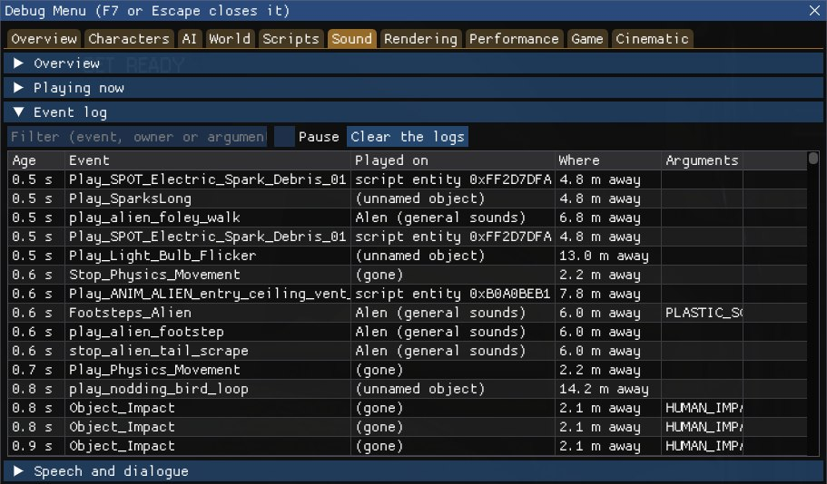
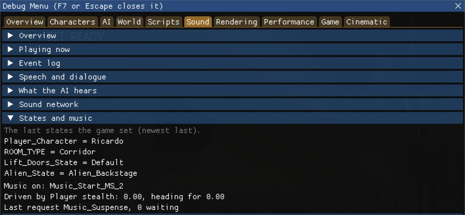
![The sound network drawn over a room of the game with the window closed: node dots coloured by network joined by short faint links, the networks' names (such as CM1 - Pillar Room Near Spawn and CM1 - Side Room 1), doorway squares labelled with their number and state (doorway 18: closed and doorway 32: closed in red, doorway 19: open in green), and the sounds playing nearby with what plays them and their distances, such as Play_SPOT_Electric_Spark_Debris_01 x3 at 7.9 m and the alien's backstage sounds at 35.4 m, occluded.](img/w2-sound-network.jpg)
Under Tools, after the views:
The Sound group's switches, values and commands, for Live Link & AI Assistants:
| Tab | Switches and values | Commands |
|---|---|---|
| Sound | sound.network, sound.network_all_links, sound.playing, sound.stimuli, sound.route, sound.speech | sound.status, sound.list_playing, sound.list_doorways |
| Sound: tools | sound.listener_frozen, sound.listener_at_player; value sound.noise_loudness | sound.listener, sound.make_noise, sound.list_events, sound.play_event, sound.stop_event, sound.last_played, sound.list_squads |
sound.make_noise takes where: player (the default), pick (the crosshair point), camera or x,y,z, and optionally ; and a loudness from 0 to 1. sound.play_event takes an event's name, and optionally ; and where to play it: camera (the default), player, pick or x,y,z.
The Rendering group has the game's own rendering switches and debug views, and shows what the renderer is doing. Its tabs:
While the Debug Menu is changing how the game draws (a rendering switch, a debug view, a muted light, a Cinematic look setting...), OpenCAGE won't capture environment maps: it names what to turn off first, so none of it gets baked into the level. Switches that don't change the picture a capture takes, such as No HUD and the anti-aliasing ones, don't count.
The game has rendering switches of its own, and the Rendering tab lets you flick 69 of them while the game runs, in groups you can fold:
Hover over a switch to see what it does: some do only part of what their name suggests, and a few only show in certain places or with certain settings. A switch that doesn't match this release of the game is greyed out; Update particles out of view isn't available on the Epic Games Store release. Reset all puts every switch back to how the game has it.
![The Rendering tab: the explanation, Reset all, and the Passes group with its switches (No solid geometry, No decals, No deferred lighting, No light decals, No radiosity, No transparent geometry, No low-resolution transparency, No lighting on transparency, No particle cell systems, No lens flares, No atmosphere, No distortion, No hair softening, No skin scattering, No character morphs, No face wrinkles, No HUD, No usable-object glow), then the Anti-aliasing group (No FXAA, No SMAA, No temporal SMAA).](img/rendering.jpg)
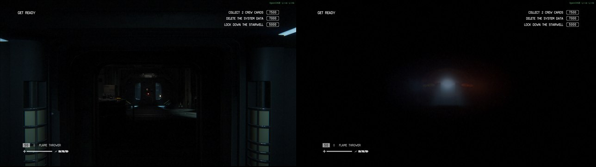
A corridor before and with No solid geometry ticked.
The game still has the shader for its own debug views of the bounce light (radiosity) and the surfaces. Pick one from Debug view, or press its button, and it's drawn over the whole screen in place of the lit scene:
Transparency and post-processing still draw over the view. With Show the view alone ticked (as it is to start with), the real-time lights and decals are left out too, by ticking the Rendering tab's No deferred lighting and No decals while the view shows; otherwise a view of the lighting looks much like the normal frame wherever lamps light the room. Leaving the real-time lights out also makes the player read as darker to the AI. Back to the game's picture turns the view off, and a switch you had ticked yourself stays ticked.
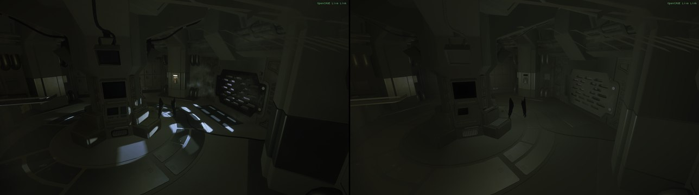
A room as the game draws it, and with the Irradiance debug view showing alone.
The real-time lights, to see what each does to a scene:
ExtraShadowLights=1), how many did, and how many wanted to but missed out; and the shadow maps' resolution and filtering.ExtraShadowLights=1 in the settings file starts the game with the capture mode's budget of 16 shadow-casting lights a frame, for up to four times the shadow work.
![The Debug Menu on Rendering > Lights beside the game: the counts of lights drawn and of shadow maps against the budget, the Overlay, Labels and Within boxes, the Leave out switches, the selected light's details, and the table of lights with their types, mover indices, colours, reaches, feature letters and states; in the game to the right, crosses, reach spheres and spotlight cones drawn over the lamps, each labelled with its number, type and mover index, and radiosity on those that feed the bounce light.](img/w2-render-lights.jpg)
What the bounce light (radiosity) has loaded and is streaming. A level whose radiosity data didn't load is lit only by its real-time lights and looks flat; the tab says whether it loaded, and from which file. Then:
Overlay draws each loaded slice's volume of probes in its slot's colour, its probe trees faintly, and the cube map users as yellow crosses. Warn when a level has no radiosity data shows a warning over the game while one runs without it; RadiosityWarning=1 in the settings file has it on from the start.
The post-processing as the game has it this frame, with the engine's own switches for it. Each switch holds the game's own flag or value, and the game's comes back when you let go; Reset all lets go of them all.
These are the engine's switches, for finding out what the post-processing is doing. To set the look of a shot, use the Cinematic group's Visuals.
The renderer's own targets and textures as this frame left them, as thumbnails; click one to see it large (Size scales it, and Large view in its own window moves it into a window of its own). They're grouped:
The pictures show the raw values, without their alpha: floating-point targets are clamped to 0 to 1, single-channel ones (depth, ambient occlusion) show in red only, and depth crowds so close to 1 that it shows as almost solid red. A black picture is a target with nothing in it this frame (velocity while nothing moves, for one), and an empty tile says why it has nothing to draw; cube maps, volume textures and multisampled targets are listed but not drawn.
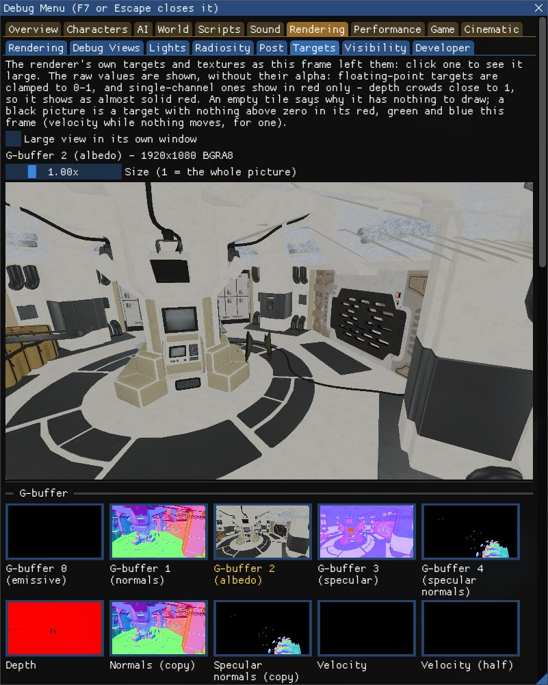
Why something is or isn't drawn:
D3DDebugLayer=1 in the settings file, the game's graphics are checked for errors as it runs, and its errors and warnings are listed here: the messages that broken imported models and shaders cause. It needs Windows' optional Graphics Tools feature installed, and the tab says when it isn't. It makes the game much slower. Warnings too, a filter, Clear and Copy.ExtraShadowLights=1.The Rendering group's switches, values and commands, for Live Link & AI Assistants:
| Tab | Switches and values | Commands |
|---|---|---|
| Rendering | render. followed by the switch's name, such as render.no_solid, render.no_radiosity, render.constant_ambient, render.disable_lods, render.no_occlusion_culling, render.output_linear or render.shader_hot_reload (report lists them all) | |
| Debug Views | render.debug_view_alone; value render.debug_view (0 off, 1 to 15 the views in the list's order) | render.list_debug_views, render.debug_view_status |
| Lights | light.overlay, light.labels, light.hide_spot, light.hide_point, light.hide_strip, light.only_shadowed, light.only_gobo; value light.overlay_distance | light.list (all for every light), light.shadow_budget, light.select, light.mute, light.unmute, light.solo |
| Radiosity | render.radiosity.overlay, render.radiosity.warning | render.radiosity.status |
| Post | render.post.no_ followed by the effect, such as render.post.no_film_grain, render.post.no_bloom or render.post.no_fog; render.post.exposure_lock; values render.post.exposure_scale (0 for the game's), render.post.tone_mapping (−1 for the game's, 0 to 6 the operators in the list's order) | render.post.status, render.post.stacks, render.post.reset |
| Targets | render.targets.window | render.targets.list, render.targets.show (a target's name, or part of one) |
| Visibility | render.envmap.overlay; values render.lod_factor (0 for the game's), render.envmap.selected | render.why_not_drawn (a mover index), render.visible_zones, render.envmap.list |
| Developer | render.shader_hot_reload | render.d3d.status, render.d3d.messages, render.d3d.clear |
The light commands take a light by the id light.list gives it, or as mover: and its mover index.
The Performance group shows how hard the game is working and how close it is to its fixed limits: when a limit is full, the game quietly leaves out what comes next, which explains lights, shadows, effects and models that go missing in a busy custom level. Its tabs are Frame, Timing, Memory and Streaming. Nothing is measured until one of them is shown, or one of their switches, Info lines or commands is used. The Info tab has three lines from them: draw calls and primitives, the GPU frame time, and memory and address space.
The renderer's counts aren't kept exactly in step with its other threads, so they can be a few short.
![The Debug Menu on Performance > Frame: the frame rate and frame time over the last second with the fastest, slowest and 1% slowest frames, the frame time graph, Graph over the game ticked, the Renderer counts table (draw calls, primitives, buffer writes, bytes written and GPU resources held, for the last frame, the last second's average and the highest), and the Limits table of lights, shadow casters, particle systems, ribbons, effect buffers, views and GPU pools in use against their limits; beside the window, the frame time graph drawn over the game.](img/w2-perf-frame.jpg)
Both parts are off until ticked:
At the top of the tab, The game's UI memory overlay turns on the game's own overlay of the memory its UI (the menus and the HUD) takes: the game writes it in MB on the right of the screen, white while it's within budget, yellow from 29.5 MB, and red from 30.5 MB with a line under it saying the UI is out of its memory budget. It takes effect straight away, and can be switched from outside the game as perf.ui_memory_overlay; UiMemoryOverlay=1 in the settings file has it on from the start. It takes the place of Launch Game's old Enable UI Memory Overlay option. On a release of the game where it can't be found, the box is greyed out and says so.
Below it:
It's read at most once a second while the tab is shown.
Textures and models are streamed: a low-resolution copy of a texture is always in memory, and the full one streams in when a zone that uses it becomes active. The tab shows:
It's read at most once a second while the tab is shown.
The Performance group's switches and commands, for Live Link & AI Assistants:
| Tab | Switches and values | Commands |
|---|---|---|
| Frame | perf.graph | perf.frame, perf.limits, perf.effects, perf.list_render_list, perf.list_views |
| Timing | perf.gpu_timing, perf.cpu_timing | perf.list_gpu_passes, perf.list_tasks |
| Memory | perf.ui_memory_overlay | perf.memory, perf.list_heaps, perf.heap_fragmentation, perf.list_entity_memory |
| Streaming | perf.streaming, perf.list_textures_waiting |
The Game group acts on the game itself:
Tick Don't write saves and nothing the game saves reaches your saved games or the Steam Cloud: checkpoint and mission saves (save stations included), the progression (which also holds the game's settings), and the input and graphics settings. The game carries on as if each save had worked (a checkpoint still fires its outputs for a finished save), and loading still works, from what was saved before. Jumping to a checkpoint or loading a campaign level from the Debug Menu can save the game, as reaching it in play would; with this on, those saves are kept back too.
It doesn't stop achievements: see Achievements for that.

Under Achievements, in the same tab, the game's achievements as it holds them, unlocked or not. Don't write saves doesn't stop the game awarding achievements on your Steam, GOG or Epic Games Store profile, so a debug checkpoint, a cheat or a modded level could unlock one: tick Block awards and stat writes and the game awards none, and changes none of their progress, until you untick it. BlockAchievements=1 in the settings file has it on from the start. The tab counts what was blocked and names the last one. The game may still note an achievement as won in memory, which goes into its next save, so keep Don't write saves on as well.
The Tools tab gathers the tools that act on the game rather than show it: the checkpoints, pause and game speed, a Free camera box that turns on the Cinematic group's free camera (with a button that opens its tab), the AI actions, and the Havok Visual Debugger. The player cheats that were here, Invisible to the AI and Infinite ammo, are now with the others in Characters > Player.
![The Debug Menu on Game > Tools on HAB_AIRPORT: Debug checkpoints, with the note that a mission part that already ran leaves the screen black, and a Jump button beside each; then Level checkpoints: Reload last checkpoint with the mission and how long ago it was captured, and the level's own checkpoints, numbered, with Jump buttons, (no name) on unnamed ones and (current) on the one the level is at; and Game speed and pause, with the Pause, Step and Step 10 buttons, Pause while this window is open and the speed slider at 1.00x.](img/w2-game-tools.jpg)
Debug checkpoints: DebugCheckpoint entities in the level scripts that start a level part-way through. Each adds itself to the list when its part of the level activates it; levels with some include SCI_ANDROIDLAB, TECH_COMMS, HAB_AIRPORT, SCI_HUB, TECH_HUB, ENG_TOWPLATFORM and TECH_RND_HZDLAB. Press Jump beside one to jump to it. It takes the place of Launch Game's old Enable Debug Checkpoints, which added the same list to the pause menu.
Level checkpoints: below them, every Checkpoint entity the level has activated, in the order its scripts activated them, numbered, with the one the level is at marked (current). Jump goes to a checkpoint by its place in the list, so one with no name, or one sharing a name with another (there are several Save_stations), can be jumped to. Reload last checkpoint restarts from the checkpoint in memory as a death does: the level goes back to how it was when that checkpoint was reached, the player, the AI and the scripts. Nothing is read from or written to the saves for it.
Most checkpoints start a mission part: the player is spawned at the part's spawn point, and the screen fades back in once the part has loaded. A part loads only once each time the level loads, and the level's own start runs one too (with no progress saved, its ambient part), so jumping to a part that has already run leaves the screen black. Load the level again to jump to it. Jumping to a checkpoint can save the game, as reaching it in play would, unless Don't write saves is on.
Pause holds the whole game, its clock, the AI, physics, animation, zone streaming and the level's scripts, without the pause menu; Resume lets it go. While it's paused, Step lets exactly one frame through and Step 10 ten, one a frame. The Debug Menu keeps working meanwhile, and OpenCAGE's edits over Live Link, the difficulty and the AI actions wait until the game runs again. Pause while this window is open holds the game whenever the Debug Menu is open.
The speed slider slows the game down or speeds it up, from 0.05 to 4 times its normal speed: everything the game times runs at that rate. Reset puts it back to 1. The game's own slow-motion moments use the same scale, so they're overridden while it isn't 1, and Cap FPS still paces the frames in real time. The free camera's Time section is the same pause, step and speed.
Pick a character from the dropdown, then:
The game still serves Havok's Visual Debugger on port 25001 of your own PC while a level runs, so a Havok 2012.2 Visual Debugger client connected to it shows the physics world, its collision and rigid bodies, live. The tab just tells you so: OpenCAGE doesn't include a client.
The Game group's switches, values and commands, for Live Link & AI Assistants:
| Tab | Switches and values | Commands |
|---|---|---|
| Game flow | game.keep_lowest_difficulty | game.status, game.difficulty, game.list_levels, game.load_level |
| Saves | game.dont_write_saves, game.save_notice, game.block_achievements | game.saves, game.saves_check (checks that the save folders are guarded, without writing anything), game.list_achievements |
| Tools | game.paused, game.pause_while_open, tools.free_camera, tools.flag. followed by a logic flag's name, such as tools.flag.prevent_all_attacks; value game.speed | game.list_debug_checkpoints, game.jump_debug_checkpoint, game.list_checkpoints, game.jump_checkpoint, game.reload_checkpoint, game.step |
game.difficulty takes novice, easy, medium, hard or nightmare, or nothing to give the difficulty. game.load_level takes a level by its name as listed (Production\DLC\ChallengeMap1), without Production\, or by its last part alone (BSP_TORRENS), in any case. game.jump_checkpoint takes a number from the list, or a name for the first checkpoint with that name. game.step takes a number of frames, up to 600.
The Cinematic group is a free camera for shots and video, with what HattiWatti's Cinematic Tools offered around it, and it takes their place: Launch Game no longer has Enable Cinematic Tools (see Coming from Cinematic Tools). Its camera and camera tracks are ported from Cinematic Tools, and fly the way they did. Its tabs:
Press F8, with the Debug Menu open or closed, or tick Cinematic camera on the Free Camera tab, to fly a free camera from where the game's camera is, looking the same way with the same field of view. Close the window to fly it (see Keys & Gamepad); while the window is open it has the keys and mouse, and the camera holds still, unless Fly with this window open is ticked. Press F8 again, or Back to the game camera, to go back to the player. The line beside the box says what the camera is doing, or why it can't turn on.
While it's on, the player is frozen and the game's keyboard, mouse and gamepad are kept from it (bar Escape, for the pause menu), and the zones around the camera stream in as they would around the player. Untick Keep the game's input to play on while the camera holds where it is, follows its track or follows its character. While the pause menu or the game over screen is up, the game has its input back and the camera holds still. A level change turns it off.
OpenCAGE.CinematicProfiles.ini, next to the settings file in the game folder.The free camera takes the game's camera from OpenCAGE's Viewport while Live Link's camera sync has it, and gives it back when you turn the camera off; the Viewport following the game's camera follows the free camera. As with camera sync, anything in the game that checks what the camera sees reacts to the free camera, not the player's. An environment map capture takes the camera while it runs. It won't turn on while Possess Characters has a character, and turns off when one is taken. With Unlock mouse on, the mouse moves the cursor until Unlock mouse's key (F4 by default) gives it to the game; the camera then turns with it, and the keys and a gamepad fly it meanwhile. The Free camera box on Game > Tools is the same camera.
![The Debug Menu on Cinematic > Free Camera with the camera on: Cinematic camera (F8) ticked with its status line, the Back to the game camera, Move the player here and Go to the selected character buttons, the camera's position and angles, the Lens section's field of view and roll, Lock to a character, and the Flying section with its speeds, Smooth mouse, Start from the game camera, Keep the game's input, and its gamepad, Freeze the player, Fly with this window open and the Gamepad slider, then the Time and Profiles sections and the folded Keys; in the game beside it, the player seen standing still from the free camera.](img/w2-cinematic-free-camera.jpg)
With the camera on and the Debug Menu closed:
| Keys | Does |
|---|---|
| W A S D, Space and Ctrl | Fly forwards, left, back and right, and up and down |
| Shift, Page Up and Page Down | Four times faster while held; faster or slower from then on |
| The mouse, or the arrow keys | Turn |
| Q and E | Roll |
| The mouse wheel, or the numeric pad's + and − | Field of view |
| The numeric pad's 6/5, 8/9 and 3/2 | The depth of field's focus distance, focal length and f-number (with Override the level's focus on) |
| F1, F2 and F3 | Add a track node where the camera is, delete the last one, and play or stop the track |
| Home | Hide or show the HUD |
| Delete and End | Pause or unpause the game, and step it one frame while it's paused |
| F9 | Take a screenshot (with the camera off too) |
On a gamepad: the left stick flies, the triggers go up and down, the right stick turns, LB and RB roll, clicking the sticks changes the field of view, the d-pad's up and down change how fast it turns, and B and Y how fast it moves.
Only the on and off key (CinematicCameraKey, F8) and the screenshot key (CinematicScreenshotKey, F9) can be changed, in the settings file; the rest are fixed. If you give one of the camera's keys to another option in Launch Game, such as the hot reload key, the camera does without it (see Keys). The tab's Keys section lists them as they are.
A track is a list of nodes, each a pose of the camera at a time along the track. Played, the camera moves through them on a smooth path, easing its pace so it keeps to the nodes' times, as Cinematic Tools' tracks did.
OpenCAGE.CinematicTracks.txt in the game folder, or another name you give there. Loading replaces the tracks you have.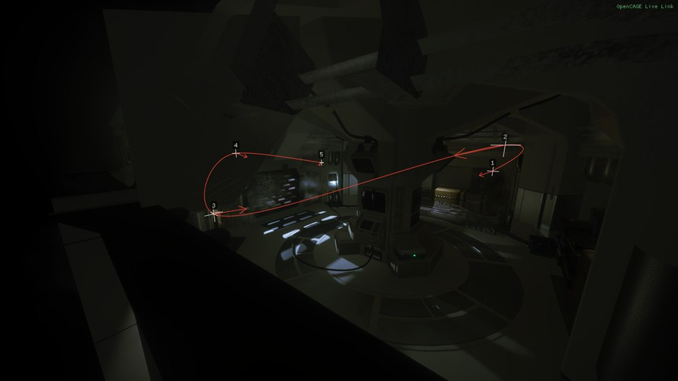
The look of the shot, each setting set in place of the level's by ticking the box beside it. The level's own value is shown beside each, and while a box is unticked the setting follows the level's, so ticking it starts from there. Back to the level's values unticks them all.
A value set while its box is unticked (by a command, a track or a profile) is kept for when you tick it. The Rendering group's Post tab has the engine's own switches for the post-processing.
Hide the HUD (Home while flying) hides the in-game HUD and the weapon HUD. In a challenge map it also hides the objectives, score and timer, which are a layer of their own, unless you untick Also hide the challenge mode's objectives when the HUD is hidden; hidden, they don't update, and catch up when shown again. Below, every layer of the game's interface (the motion tracker, subtitles, prompts...) can be hidden by itself. A menu hidden here stays hidden when it opens, so leave the pause menu's layer alone.
Freeze NPCs holds every character but the player idle where it stands, newly spawned ones too, until you untick it. People are held with the force idle motivation, which runs their behaviour trees' idle branch ahead of everything else, scripted orders included; the alien and the androids through their trees' debug switches, Disable All Aliens and Force Android Idle (see Tree Switches). The tab says how many are held. What it doesn't do:
Unticked, it only undoes what it did: a character you'd set to force idle yourself, or a tree switch you'd ticked, stays as it was. For a world that stops altogether, freeze time on the Free Camera tab instead.
The tab also has Player invisible to the AI (the switch in Characters > Player), and for the character selected Camera behind it (the free camera on, 3 m behind it, looking at it), Lock the camera to it and Unlock, and Move the player to the camera.
Take a screenshot, or press F9 with the window open or closed, to save the frame as the game drew it, without the Debug Menu or anything else it draws over the game, as a .bmp named after the level and the time in a Screenshots folder in the game folder. Hide the HUD for the shot (on) hides what Hide the HUD hides for the few frames a shot takes, then shows it again. The tab names the last file saved.
Tick Debug Menu in Launch Game instead of Enable Cinematic Tools; if you had Cinematic Tools ticked, OpenCAGE ticks the Debug Menu for you the first time this version starts. Where everything went:
| Cinematic Tools | Debug Menu |
|---|---|
| Its window (F5) | The Debug Menu's key (F7 by default), then the Cinematic group |
| Camera on and off (Insert) | F8, or Cinematic camera on the Free Camera tab. Insert is the hot reload key's default. |
| The camera's speeds, field of view and Smooth mouse | Free Camera: Lens and Flying |
| Disable player KBM input, Disable player gamepad input | Free Camera: Keep the game's input and and its gamepad |
| Reset camera automatically | Free Camera: Start from the game camera |
| Lock to character | Free Camera: Lock to a character, or Cast: Lock the camera to it |
| Camera profiles | Free Camera: Profiles. Profiles Cinematic Tools saved aren't read. |
| Timescale; freeze time (Delete) | Free Camera: Time (the same as Game > Tools), Delete, and End to step a frame |
| Tracks; F1, F2, F3 | Tracks, with the same keys, several tracks, and saving them to a file |
| Visuals: Override values, brightness, contrast, saturation, gamma, colour tint, tone map settings | Visuals, each setting overridden by itself; brightness and gamma are Frame scale and Frame offset |
| DoF strength, focus distance, focus scale; the numeric pad keys | Visuals: Focal length, Focus distance and F-number, with the same keys |
| Hide HUD (Home) | HUD, and Home |
| Freeze characters (F7) | Cast: Freeze NPCs, with no key of its own (F7 opens the Debug Menu) |
| Invisibility (I) | Cast: Player invisible to the AI, with no key. Like Cinematic Tools' invisibility, it doesn't hide the player's body. |
| The glow round usable objects, always off with Cinematic Tools | On as in the game; Rendering > Rendering's No usable-object glow turns it off |
| Key config | Not available: the keys are fixed, bar the camera's on and off key and the screenshot key in the settings file |
| No screenshots | Screenshots (F9) |
There's no injector to start, nor antivirus exclusion to add for one, and Live Link and the rest of Launch Game's Debug tools run alongside the camera, which they never did with Cinematic Tools. See Launch Game for the rest of the change.
The Cinematic group's switches, values and commands, for Live Link & AI Assistants:
| Tab | Switches and values | Commands |
|---|---|---|
| Free Camera | cinematic.camera, cinematic.keep_input, cinematic.keep_gamepad, cinematic.freeze_player, cinematic.fly_with_menu, cinematic.smooth_mouse, cinematic.start_from_game; values cinematic.fov, cinematic.roll, cinematic.move_speed, cinematic.turn_speed, cinematic.roll_speed, cinematic.fov_speed, cinematic.mouse_sensitivity, cinematic.pad (−1 the first connected) | cinematic.status, cinematic.camera_get, cinematic.camera_set, cinematic.reset, cinematic.lock, cinematic.go_to, cinematic.player_to_camera, cinematic.profile_save, cinematic.profile_load, cinematic.profile_delete, cinematic.list_profiles, cinematic.keys |
| Tracks | cinematic.track_loop, cinematic.track_manual, cinematic.track_show, cinematic.track_lock_rotation, cinematic.track_lock_fov, cinematic.track_lock_dof; values cinematic.track_gap, cinematic.track_speed | cinematic.list_tracks, cinematic.track_new, cinematic.track_select, cinematic.track_remove, cinematic.list_nodes, cinematic.track_add, cinematic.track_update, cinematic.track_delete, cinematic.track_goto, cinematic.track_time, cinematic.track_play, cinematic.track_stop, cinematic.track_seek, cinematic.track_save, cinematic.track_load |
| Visuals | cinematic.override. followed by a setting, such as cinematic.override.saturation, and cinematic.dof; values cinematic. followed by the setting, such as cinematic.saturation, and cinematic.dof_focal_length, cinematic.dof_focus, cinematic.dof_fnumber | cinematic.list_visuals, cinematic.visuals_reset |
| HUD | cinematic.hide_hud, cinematic.hide_hud_challenge, cinematic.ui. followed by a layer's name, as cinematic.list_ui_layers gives it | cinematic.list_ui_layers |
| Cast | cinematic.freeze_npcs | cinematic.freeze_status |
| Screenshots | cinematic.screenshot_hide_hud | cinematic.screenshot (optionally a file name) |
cinematic.camera_set takes x,y,z, and optionally the yaw, pitch and roll and the field of view, in degrees, and turns the camera on there. cinematic.lock takes a character's name or id, or nothing to unlock.
Nearly everything in the Debug Menu has a name, so it can be worked from outside the game over Live Link, with the game started with both Debug Menu and Live Link ticked. None of it needs the window open. There are three kinds of name:
characters.view_cones, nav.polys, game.dont_write_saves.game.speed, nav.radius, ai.tuning.player_throw_speed.player.give with medikit,max, nav.status, inspect.pick. The command help lists every command with what it takes.Each group above ends with a table of its names, and Names below says which group each one starts with. Most commands that act on a character act on the selected one, or on the one given as id= its unique id.
OpenCAGE works the menu this way itself: its script debugger sets and steps breakpoints through it, Select Entity Under Game Crosshair asks the World > Inspect crosshair what it's on, and Show Live States Above Nodes reads the scripts through it (see The Debug Menu Over Live Link). From the level's own scripts, a DebugMenuToggle entity sets a switch by name.
An AI assistant connected to OpenCAGE works it through runtime_utils with debug_menu and one of these as menu:
report (the default): whether the window is open, the group and tab in front, the selected character, the groups and tabs, the commands, every value with its number, and every switch with its state.open and close the window.tab brings a tab to the front by name: the tab of that name, else the first whose name contains it, else the first group whose name does, ignoring case, so Saves, debug views and Cinematic all work.select selects the first character whose name, or failing that whose class, contains name, such as alien or player.set ticks or unticks the switch name, as value says.value sets the value name to number, kept within its range.run runs the command name with argument and gives its answer, as plain text a line at a time.The window takes up tab and select at its next frame, so report again to see them. A command that waits for the game gives up after a couple of seconds (a few that read a lot, such as physics.census, wait longer), saying it timed out (with no level running, or the game paused, say), and its work still runs when the game gets to it. With screenshot, an assistant can look at what the Debug Menu shows: the window and everything it draws over the game are in the game's picture. runtime_utils with debugger works the script debugger. A game started without the Debug Menu refuses all of these, answering that the debug menu is off in the game. launch_options with debug_menu, debug_menu_key and dont_write_saves sets the Launch Game boxes for the next start.
Every switch, value and command has a dotted name that starts with its area, and the area says which group it's in. report and help list them all.
| Starts with | Group | For example |
|---|---|---|
info. | Overview | info.zone, info.frame, info.gpu |
characters., player., alien., anim.; the State, Control and Alien tabs' commands start with ai., and two of the player cheats with tools. | Characters | characters.labels, characters.view_cones, player.light_tint, anim.skeletons, ai.kill, tools.invisible |
ai., bt., tree_switch. | AI | bt.overlay, tree_switch.Disable All Aliens |
world., nav., inspect., physics., zones. | World | inspect.pick, physics.bodies |
scripts., debugger. | Scripts | scripts.list_errors, scripts.profiler, debugger.state |
sound. | Sound | sound.network, sound.play_event |
render., light. | Rendering | render.no_solid, render.debug_view, light.solo |
perf. | Performance | perf.graph, perf.frame, perf.gpu_timing |
game., tools. | Game | game.dont_write_saves, game.paused, game.speed, game.jump_checkpoint, tools.free_camera |
cinematic. | Cinematic | cinematic.camera, cinematic.hide_hud, cinematic.screenshot |
menu. | The menu itself | menu.characters (this frame's characters) |
For instance, set game.dont_write_saves on, value game.speed 0.25, run game.jump_checkpoint with 3, or run light.solo with mover:12.